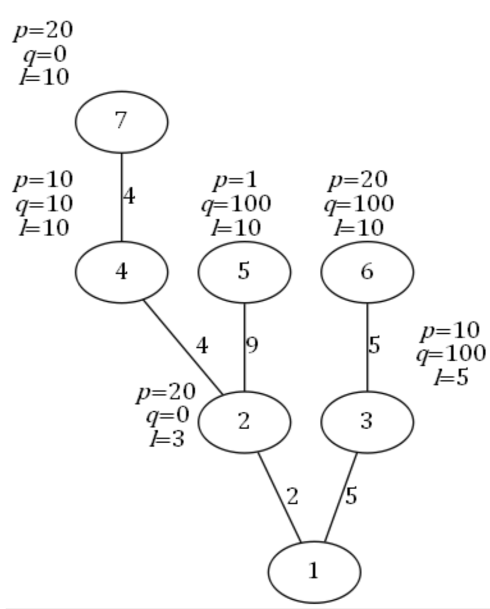
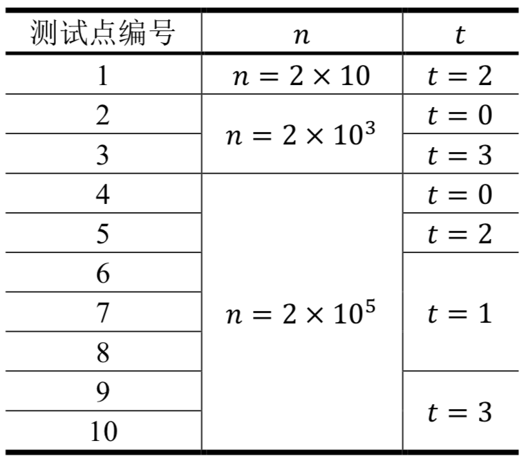

Comet OJ
Comet OJ第1行包含2个非负整数$𝑛, 𝑡$，分别表示城市的个数和数据类型（其意义将在后面提到）。
第2到$𝑛$行，每行描述一个除SZ之外的城市。其中第$𝑣$行包含5个非负整数$𝑓_𝑣, 𝑠_𝑣, 𝑝_𝑣, 𝑞_𝑣, 𝑙_𝑣$，分别表示城市$𝑣$的父亲城市，它到父亲城市道路的长度，票价的两个参数和距离限制。
请注意：输入不包含编号为1的SZ市，第2行到第$𝑛$行分别描述的是城市2到城市𝑛。
今年夏天，NOI在SZ市迎来了她30周岁的生日。来自全国$𝑛$个城市的OIer们都会从各地出发，到SZ市参加这次盛会。
全国的城市构成了一棵以SZ市为根的有根树，每个城市与它的父亲用道路连接。为了方便起见，我们将全国的$𝑛$个城市用1到$𝑛$的整数编号。其中SZ市的编号为1。对于除SZ市之外的任意一个城市$𝑣$，我们给出了它在这棵树上的父亲城市$𝑓_𝑣$以及到父亲城市道路的长度$𝑠_𝑣$。
从城市$𝑣$前往SZ市的方法为：选择城市$𝑣$的一个祖先$𝑎$，支付购票的费用，乘坐交通工具到达$𝑎$。再选择城市$𝑎$的一个祖先$𝑏$，支付费用并到达$𝑏$。以此类推，直至到达SZ市。
对于任意一个城市$𝑣$，我们会给出一个交通工具的距离限制$𝑙_𝑣$。对于城市$𝑣$的祖先$𝑎$，只有当它们之间所有道路的总长度不超过$𝑙_𝑣$时，从城市$𝑣$才可以通过一次购票到达城市$𝑎$，否则不能通过一次购票到达。对于每个城市$𝑣$，我们还会给出两个非负整数$𝑝_𝑣, 𝑞_𝑣$作为票价参数。若城市$𝑣$到城市$𝑎$所有道路的总长度为$𝑑$，那么从城市$𝑣$到城市$𝑎$购买的票价为$𝑑𝑝_𝑣+ 𝑞_𝑣$。
每个城市的OIer都希望自己到达SZ市时，用于购票的总资金最少。你的任务就是，告诉每个城市的OIer他们所花的最少资金是多少。
第1行包含2个非负整数$𝑛, 𝑡$，分别表示城市的个数和数据类型（其意义将在后面提到）。
第2到$𝑛$行，每行描述一个除SZ之外的城市。其中第$𝑣$行包含5个非负整数$𝑓_𝑣, 𝑠_𝑣, 𝑝_𝑣, 𝑞_𝑣, 𝑙_𝑣$，分别表示城市$𝑣$的父亲城市，它到父亲城市道路的长度，票价的两个参数和距离限制。
请注意：输入不包含编号为1的SZ市，第2行到第$𝑛$行分别描述的是城市2到城市𝑛。
输出包含$𝑛 − 1$行，每行包含一个整数。其中第$𝑣$行表示从城市$𝑣 + 1$出发，到达SZ市最少的购票费用。同样请注意：输出不包含编号为1的SZ市。
7 3
1 2 20 0 3
1 5 10 100 5
2 4 10 10 10
2 9 1 100 10
3 5 20 100 10
4 4 20 0 1040
150
70
149
300
150【样例1说明】
样例如图所示。
从每个城市出发到达SZ的路线如下（其中箭头表示一次直达）：
城市2：只能选择2 → 1，花费为2 × 20 + 0 = 40。
城市3：只能选择3 → 1，花费为5×10+100 = 150。
城市4：由于4+2=6≤$𝑙_4$=10，故可以选择4→1。若选择4 → 1，花费为(4 +2) × 10 + 10 = 70；若 选 择4 → 2 → 1， 则 花 费 为(4 ×10+10)+(2×20+0) =90；因此选择4 → 1。
城市5：只能选择5 →2→1，花费为(9×1+100) + (2 × 20 + 0) = 149；无法选择5→1，因为$𝑙_5$=10，而城市5到城市1总路程为9 + 2 = 11 > $𝑙_5$，城市5不能直达城市1。
城市6：若选择6 → 1，花费为(5 + 5) × 20 + 100 = 300；若选择6 → 3 →1，花费为(5 × 20 + 100) + (5 × 10 + 100) = 350；因此选择6 → 1。
城市7：选择7 → 4 → 1，花费为(4 × 20 + 0) + ((4 + 2) × 10 + 10) = 150；其他方案均比该方案差。

【数据规模与约定】
对于所有测试数据，保证$0≤𝑝_𝑣≤10^6，0≤𝑞_𝑣≤10^{12}，1≤𝑓_𝑣<𝑣$；保证$0 < 𝑠_𝑣≤ 𝑙_𝑣≤ 2 × 10^{11}$，且任意城市到SZ市的总路程长度不超过$2 × 10^{11}$。
输入的$𝑡$表示数据类型，$0 ≤ 𝑡 < 4$，其中：
当𝑡 = 0或2时，对输入的所有城市$𝑣$，都有$𝑓_𝑣= 𝑣 − 1$，即所有城市构成一个以SZ市为终点的链；
当𝑡=0或1时，对输入的所有城市$𝑣$，都有$𝑙_𝑣=2×10^{11}$，即没有移动的距离限制，每个城市都能到达它的所有祖先；
当𝑡 = 3时，数据没有特殊性质。
每组测试数据的𝑛和𝑡如下所示

【特别提示】
请注意，调用栈占用的空间会计入总空间占用中，和程序其他部分占用的内存共同受到内存限制。
数据的输入输出需要用到64位整型。如果你在计算中需要用到两个64位整型相乘，请务必注意结果是否会溢出。